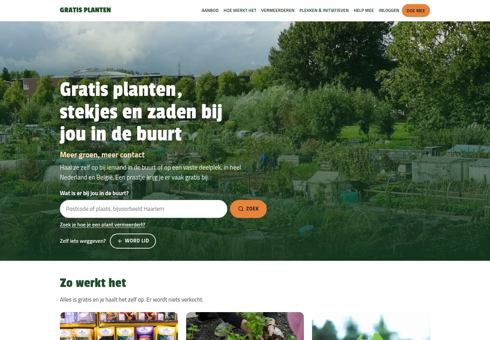
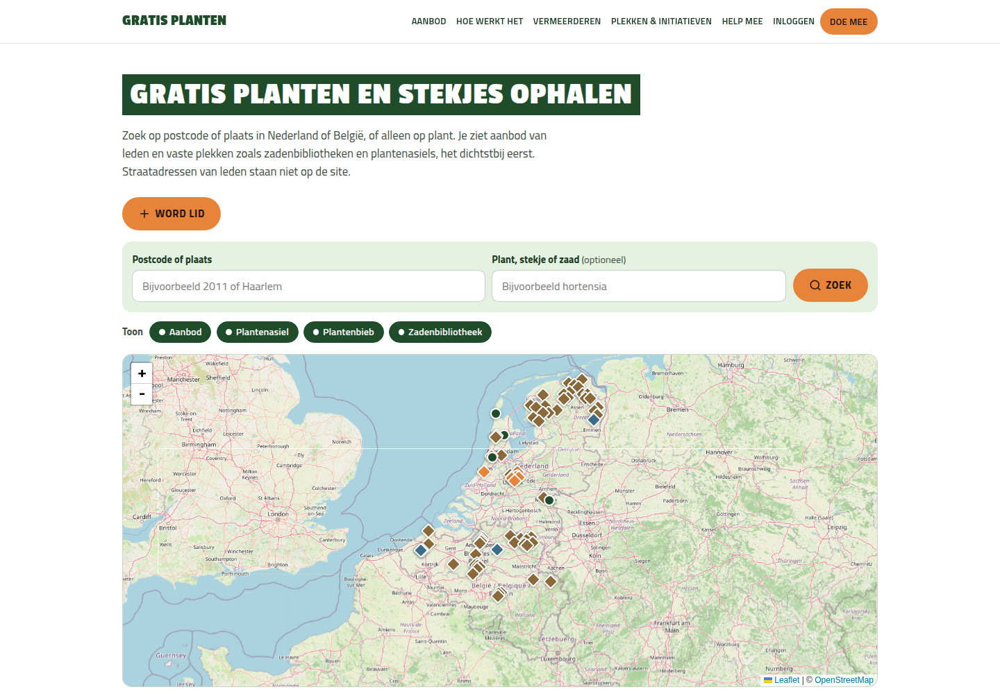
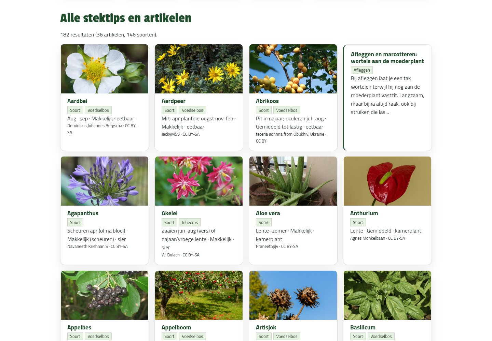

Case
Gratis planten
Mensen in de buurt met elkaar in contact brengen, en meer groen in de wereld. Ik bouwde het communityplatform voor gratis stekjes, planten en zaden — en pakte daarna het verkeer aan.



Vraag
Hoe laat je een nieuw platform snel groeien?
Gratis planten brengt buurtgenoten bij elkaar die stekjes, planten of zaden weggeven. Dat vraagt meer dan een brochure-site: leden, aanbod, vaste deelplekken en een duidelijke route van bezoek naar meedoen.
Ik bouwde het platform van begin tot livegang. Daarna ging het om tempo: wat werkt voor vindbaarheid en conversie, snel live zetten, meten, en weer bijsturen.
Aanpak
Stadspagina’s, kaart, België en snelle releases
Ik combineerde vindbare stadspagina’s, een deelplekkenkaart, uitbreiding naar België, social posts met UTM-links, een conversietrechter, en een korte releasecyclus. Wat werkt, ging snel live; daarna meten en bijsturen.
- 47 stadspagina’s (43 in Nederland, 4 in België), met kaart en lokale deelplekken.
- Deelplekkenkaart op het aanbod: 88 deelplekken in de data (51 NL, 37 BE), naast aanbod van leden.
- Sinds 31 oktober heel België: Belgische postcodes, deelplekken en stadspagina’s.
- Facebook- en Instagram-posts met UTM-links via een postlogboek.
- Conversietrechter van klik tot eerste aanbod, plus korter aanmelden en duidelijke «Word lid»-knoppen.
- 71 releases in 9 dagen: metingen en verbeteringen gingen vaak dezelfde dag of dagen later live.
Resultaat
Van 153 naar 1.527 pageviews in zes dagen
Volgens het eigen dashboard van Gratis planten (gemeten 9 november 2026) ging het verkeer van 153 pageviews op de eerste dag (30 oktober) naar een piek van 1.527 op 5 november — ongeveer 10× in zes dagen. In de eerste elf dagen (30 oktober–9 november) telde het dashboard 9.038 pageviews; in de week 2–8 november 6.505. Sinds 29 oktober kwamen er 38 aanmeldingen bij.
Herkenbaar?
Een platform dat moet groeien na livegang?
Laat zien wie er moet meedoen, welk aanbod of welke community je wilt, en wat bezoekers zelf moeten kunnen doen. Dan kijk ik wat eerst verkeer of conversie oplevert.